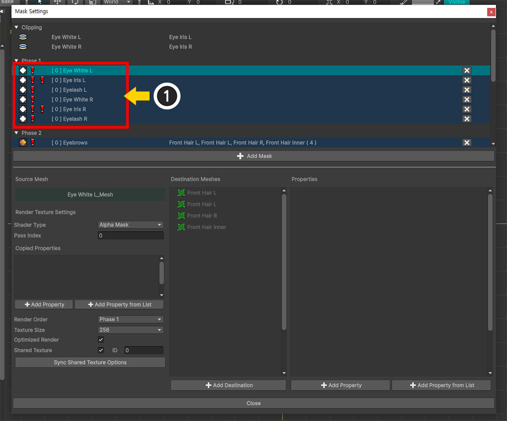

AnyPortrait > マニュアル > シースルー効果
シースルー効果
1.6.0

「前髪が片目を覆ったキャラクターイラスト」です。
このようなデザインのキャラクターをきれいに表現したいとき、中の絵のように、「髪の毛に目がそっと映っている漫画的演出」が活用されます。
これを「AnyPortrait」を含む「アニメーションツール」でどのように表現するかを考えてみましょう。
最も簡単な方法は、「髪の毛」レイヤーの一部を少し透明にすることです。
しかし、意図したもの（真ん中の絵）と髪を少し透明にした結果（右の絵）は、明らかに違いがあります。
「髪」レイヤーが半透明になると、「目」レイヤーだけでなく、「顔」、「内側の髪」レイヤーもすべて見え、きれいにレンダリングされません。

実際、これを実装することは思ったより簡単ではありません。
これは、「目」レイヤーが「髪の毛」レイヤーの後ろにある状態で、不透明な「髪の毛」の前にレンダリングできないためです。
このとき、「AnyPortrait v1.6.0」に追加された「シースルー効果（See-Through）」を利用すれば意図したものを表現できます。
改善された「マスク」機能では、レンダリングテクスチャを作成するときに、従来の「アルファマスクシェーダ（Alpha Mask Shader）」の代わりに「ノーマルシェーダ（Normal Shader）」を使用することもできます。
シェーダが変更されると、画面に出力されるのと同様にレンダリングテクスチャにレンダリングされます。
次に、このレンダリングテクスチャをターゲットメッシュに渡すときに、「Alphaチャンネルでのアルファクリッピング演算」ではなく、「RGBチャンネルのカラー補間演算」を行うように設定します。
このように「マスク」機能を活用すると、「シースルー効果」を作成できます。
メモ
このページで紹介する例では、「シースルー効果」だけでなく、「共有テクスチャ」、「シェーダの変更」、「マスクチェーン」がすべて活用されています。
詳細については、次のマニュアルを参照してください。
- マスク
- マスクとカスタムシェーダー
- マスクチェーン
「シースルー効果」の処理結果と一般的な「クリッピングマスク」の処理結果は、互いに反対のように見える。
「シースルー効果」では、マスクを生成するメッシュがむしろクリッピングされてレンダリングされるように見えるからです。
そのため、「シースルー効果」を「クリッピングマスクの変形」ではなく、「マスクの仕組みを活用した例」と見るのが、このページの説明を理解するのに良いでしょう。
キャラクターイラストを「AnyPortrait」にインポートした状態です。
いくつかの「Eye...」メッシュが4つの「Front Hair...」メッシュに映って見えるようにしましょう。
作業を始める前に、「Eye Iris L / R」メッシュは、「Eye White L / R」メッシュへのクリッピングが設定されていることを覚えておいてください。

(1) 「Eye ...」メッシュの1つを選択します。
(2) 「Open Mask Settings」ボタンを押します。

(1) 「Add Mask」ボタンを押します。
(2) 「シースルー効果」を適用する「Eye」メッシュを Ctrl キーを押してすべて選択します。
(3) 「Select」ボタンを押します。

選択した「Eye」メッシュの「マスクデータ」が作成されました。
(1) 「マスクデータ」のいずれかを選択します。
(2) 「Shader Type」の値を「Main Texture With Color」に変更します。
このオプションの値は、「画面にレンダリングするのと同じシェーダー」で「マスクレンダーテクスチャ」をレンダリングします。
「Unity 2023」以降のプロジェクトでレンダリングパイプラインが「URP」に設定されている場合、「Main Texture With Color」オプションは正常に動作しません。
この問題の説明と解決方法については、「関連ページ」をご覧ください。

(1) 先ほど確認したように、「Eye Iris L/R」メッシュが「Eye White L/R」メッシュからクリッピングされていたため、「マスクチェーン」および「レンダリング順序問題」が発生してしまいました。 （関連ページ）
(2) レンダリング順序の問題を解決するために、選択した「マスクデータ」の「Render Order」の値を「Phase 2」に変更します。

レンダーテクスチャの作成オプションを上記のように変更します。
- 「Texture Size」をかなり大きな値に変更します。 「マスクチェーン」が発生した場合や「共有テクスチャ」を利用する場合は、マスク品質のために高解像度を設定することを考慮する必要があります。
- 「Shared Texture」を有効にし、「ID」を指定します。 「Eye」メッシュが共通のレンダーテクスチャでレンダリングを行うようにするためです。 （ここでは「ID」の値として「0」を入力しました。）

(1) 「Add Destination」ボタンを押します。
(2) すべての「Front Hair ...」メッシュを Ctrl キーを押してすべてを選択します。
(3) 「Select」ボタンを押します。
(1) 「Add Property」ボタンを押します。
(2) 追加されたプロパティのプリセットタイプを「See Through Preset」に変更します。

シースルー効果プリセットでは、補助パラメータとして「シースルー比率」を設定できます。
(1) 「Float」型の追加パラメータに「0～1」の間の値（ここでは「0.5」）を入力します。
これで、「シースルー効果」の「マスクデータ」の設定が完了しました。
この例では、複数の「Eye...」メッシュを一度に透過する必要があります。
したがって、他の「マスクデータ」が同じ「共有テクスチャ」でレンダリングされるように設定を続けましょう。

(1) 別の「マスクデータ」を選択します。
(2) 「Shared Texture」をチェックし、「ID」項目に同じ値（ここでは「0」）を入力します。
残りのすべての「マスクデータ」についても同じことを行います。

(1) 全ての「マスクデータ」の「共有テクスチャ」の設定が完了すると、上記のような多数の警告アイコンが表示されます。
「Shared Texture」オプションに加えて、まだ「Shader Type」や「Render Order」などのオプションがまだ同期されていないためです。

(1) 最初に選択した「マスクデータ」を再度選択します。
(2) 「Sync Shared Texture Options」ボタンを押します。
(3) メッセージが表示されたら、「Sync All Options」ボタンを押します。

すべての「Eye...」メッシュの「マスクデータ」のシースルー効果の設定が完了しました。

「マスク設定ダイアログ」を閉じて結果を確認しましょう。
目のメッシュが前髪を透過してレンダリングされるのを見ることができます。
シースルー比率に「0.5」を入力したため、「50%」程度透過しています。
シースルー比を「制御パラメータ」を用いて制御する方法も見てみましょう。
(1) 新しい「制御パラメータ」を生成します。
(2) 「制御パラメータ」の「名前」を設定し、「Float」タイプに設定します。
(3) 値の範囲を「0～1」に設定します。
(1) 「マスク設定ダイアログ」を開き、プロパティのある「マスクデータ」を選択します。
(2) プロパティのオプションの中で「Control Parameter」をチェックし、「Set」ボタンを押します。
(3) 先ほど作成した「制御パラメータ」を選択します。
(4) 「Select」ボタンを押します。
(1) 次に「制御パラメータ」を調整してみましょう。
(2) 「Eye…」 メッシュのシースルー効果の度合いが変わることがわかります。

「Bake」をしてUnityシーンで確認しましょう。
「制御パラメータ」を調整すると、キャラクターの目が髪をゆっくりと透過してレンダリングされるのがわかります。